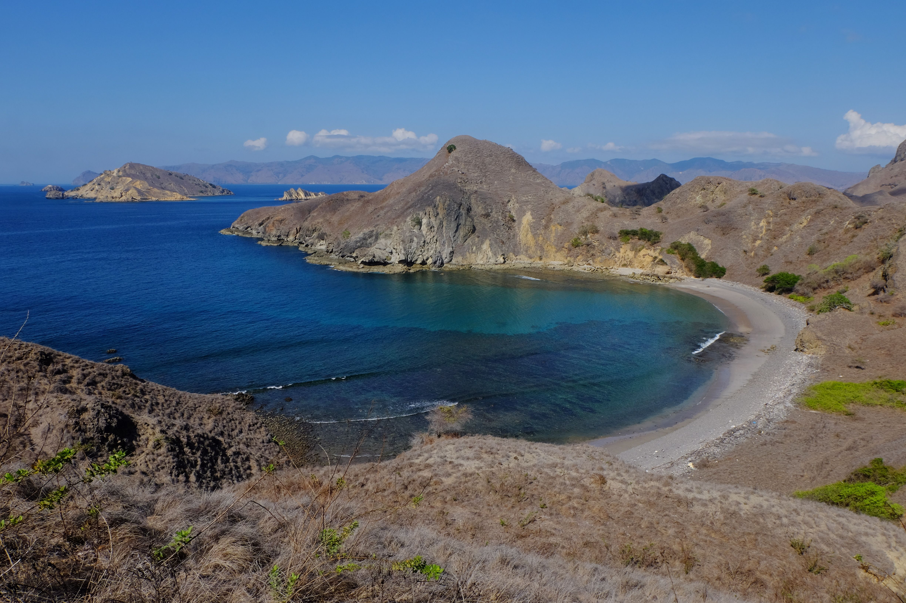
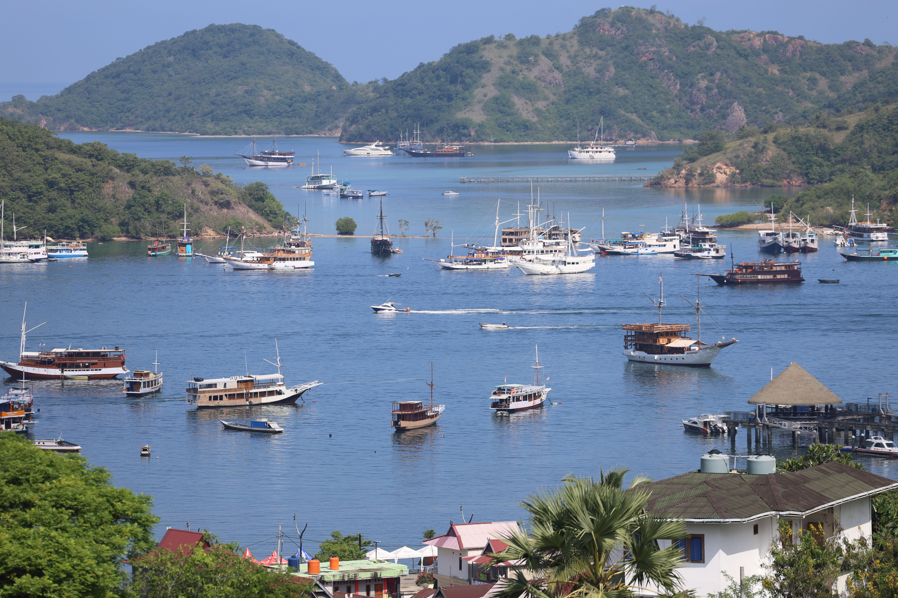

Mengenal Labuan Bajo!



Labuan Bajo adalah sebuah kota pelabuhan yang terletak di ujung barat Pulau Flores, Provinsi Nusa Tenggara Timur (NTT), Indonesia. Secara administratif, kota ini berstatus sebagai ibu kota Kabupaten Manggarai Barat. Awalnya hanya sebuah desa nelayan kecil dan pusat kecamatan, Labuan Bajo kini telah bertransformasi menjadi salah satu destinasi pariwisata paling terkenal di Indonesia, terutama karena posisinya sebagai gerbang utama menuju Taman Nasional Komodo.
Labuan Bajo berada di pesisir barat Flores, menghadap selat yang memisahkan Pulau Flores dari Pulau Sumbawa. Di sebelah barat kota ini, terbentang gugusan pulau-pulau kecil yang menjadi bagian dari Taman Nasional Komodo, termasuk Pulau Komodo, Pulau Rinca, dan Pulau Padar. Kota ini dapat diakses melalui Bandara Komodo (kode LBJ) yang melayani penerbangan langsung dari Jakarta, Denpasar, dan Surabaya, menjadikannya semakin mudah dijangkau oleh wisatawan domestik maupun mancanegara.
Daya tarik terbesar Labuan Bajo adalah kedekatannya dengan Taman Nasional Komodo, yang didirikan pada tahun 1980 untuk melindungi komodo, spesies kadal terbesar di dunia. Taman nasional ini mencakup 29 pulau dengan total area sekitar 1.817 km² dan diakui sebagai Situs Warisan Dunia UNESCO sejak tahun 1991. Populasi komodo yang tersisa di alam liar diperkirakan sekitar 3.000 ekor, yang tersebar di beberapa pulau seperti Komodo, Rinca, Padar, Gili Motang, dan Nusa Kode.
Selain komodo, kawasan ini juga menawarkan keanekaragaman hayati laut yang luar biasa, termasuk terumbu karang yang masih alami, ikan pari manta, dugong, dan lebih dari 1.000 spesies ikan karang. Beberapa spot menyelam di sekitar Labuan Bajo bahkan masuk dalam daftar terbaik di dunia, seperti Manta Point, Batu Bolong, dan Crystal Rock.
Sejak ditetapkan sebagai salah satu Destinasi Super Prioritas oleh pemerintah Indonesia pada tahun 2019, Labuan Bajo mengalami perkembangan pariwisata yang sangat pesat. Kota ini telah berubah dari desa nelayan tradisional menjadi pusat pariwisata modern dengan berbagai fasilitas seperti hotel, restoran, marina, dan layanan tur kapal Phinisi (kapal layar tradisional Indonesia).
Pariwisata telah memberikan dampak ekonomi yang signifikan bagi masyarakat lokal. Sektor ini membuka lapangan kerja baru, meningkatkan peluang usaha (seperti rumah makan, penginapan, dan penyewaan peralatan snorkeling), serta meningkatkan pendapatan daerah. Namun, beberapa penelitian juga mencatat bahwa manfaat ekonomi ini belum sepenuhnya dirasakan secara merata. Sebagian masyarakat menghadapi tantangan seperti kenaikan harga kebutuhan pokok, naiknya harga tanah, dan persaingan dengan investor besar.
Labuan Bajo merupakan wilayah dengan masyarakat yang mayoritas berprofesi sebagai nelayan dan kini semakin banyak yang terlibat dalam industri pariwisata. Partisipasi aktif masyarakat lokal dalam berbagai aspek pariwisata—mulai dari penyediaan layanan wisata hingga pengelolaan produk lokal—diharapkan dapat mendorong terciptanya peluang ekonomi yang lebih merata dan berkelanjutan. Di kota ini juga terdapat beberapa tempat ibadah yang mencerminkan keberagaman masyarakat, seperti Gereja Masehi Injili yang menjadi salah satu landmark lokal.
Musim terbaik untuk mengunjungi Labuan Bajo adalah antara bulan April hingga November, ketika cuaca cenderung kering dan visibilitas untuk kegiatan menyelam berada dalam kondisi optimal. Pada bulan-bulan ini, wisatawan dapat menikmati berbagai aktivitas seperti trekking di Pulau Padar untuk melihat pemandangan ikonik dari atas bukit, snorkeling di Pink Beach (pantai dengan pasir berwarna kemerahan), atau mengikuti tur kapal untuk menjelajahi pulau-pulau di Taman Nasional Komodo.
Meskipun pariwisata Labuan Bajo terus berkembang, terdapat kekhawatiran mengenai keberlanjutan lingkungan dan keadilan sosial. Beberapa laporan menyebutkan adanya privatisasi aset publik, pencaplokan lahan masyarakat adat, serta pengalihan fungsi hutan resapan demi kepentingan investasi. Oleh karena itu, pengelolaan pariwisata yang lebih adil, berkelanjutan, dan berpihak pada masyarakat lokal menjadi kunci agar Labuan Bajo dapat tetap menjadi destinasi wisata kelas dunia tanpa mengorbankan alam dan kesejahteraan penduduk setempat.